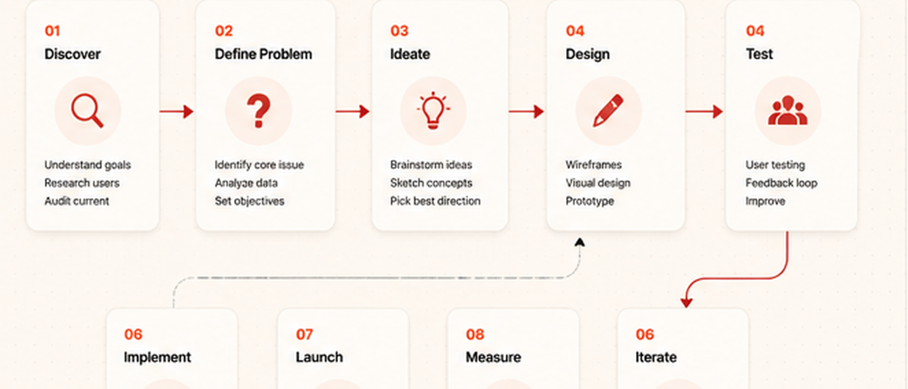
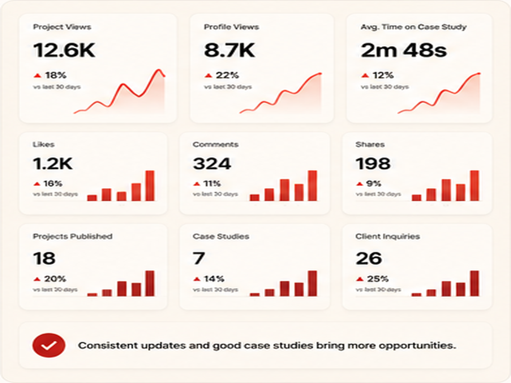
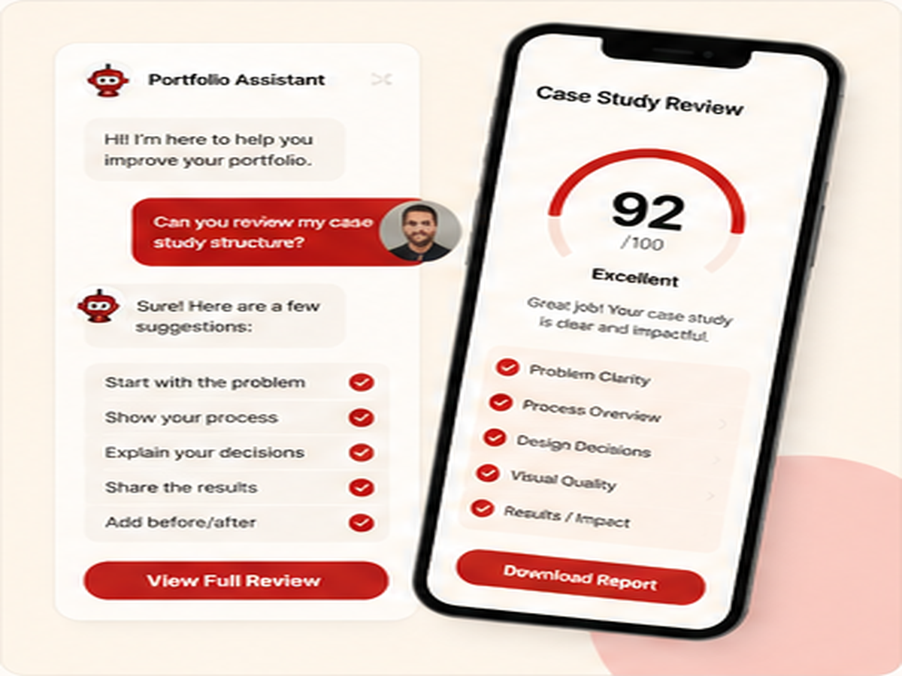
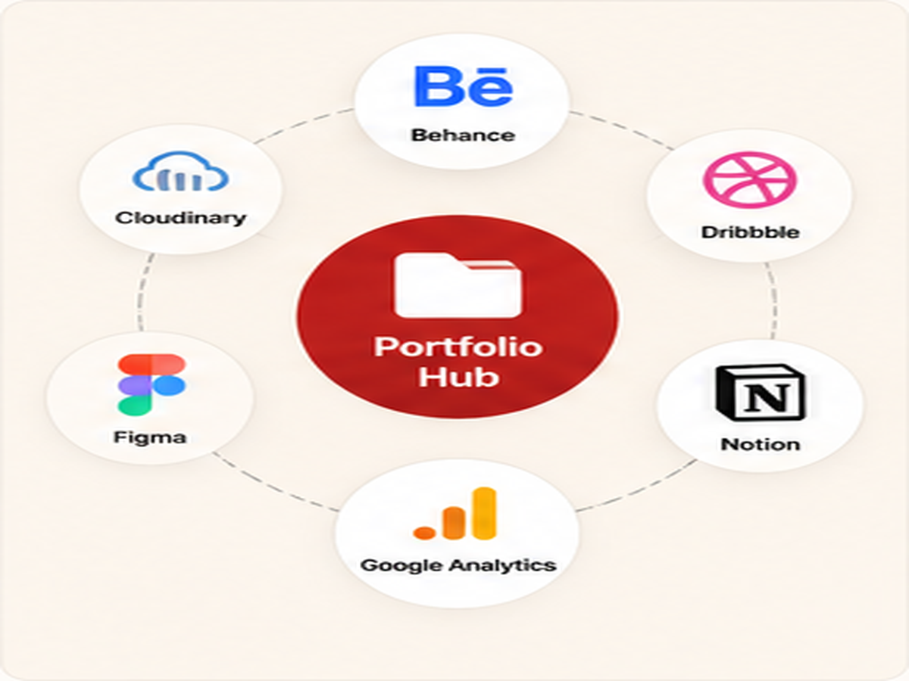
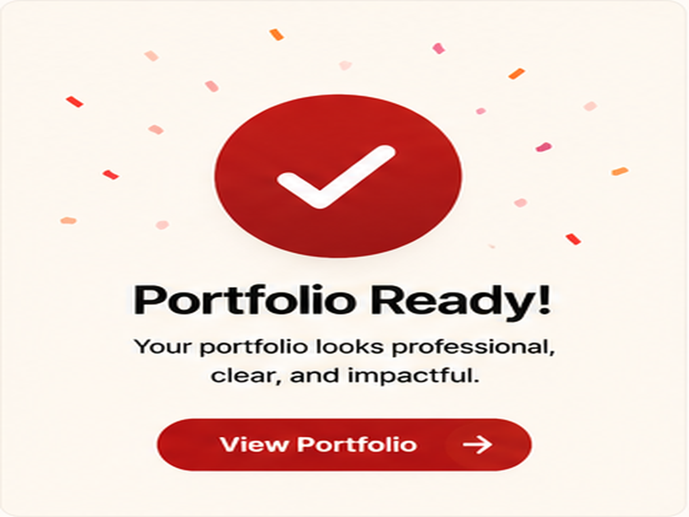

A portfolio should explain your decisions.
A good portfolio is not just a gallery of finished screenshots. It should show how you think, what problem you solved, and why your design choices matter. Platforms like Behance show how case studies can present work with process, mood, and results.
When visitors only see the final design, they may like the visuals but miss your value. When they see the problem, process, and result, they understand that your work is strategic.

Large case study preview
Before and after portfolio section
Portfolio process detailShow the problem before the design.
Before showing the final screen, explain what was wrong before. Was the layout confusing? Was the old page too slow? Was the offer unclear? The problem makes the final result feel more valuable.
Sites like Dribbble are useful for visual inspiration, but your own portfolio should go deeper than visuals. A strong case study tells the story behind the design.
Process makes your work easier to trust.
Clients want to know how you think. Show sketches, wireframes, layout direction, color choices, typography choices, and what changed from version one to the final version.
You do not need to show every small step. Show only the steps that help someone understand your skill, judgment, and problem-solving style.
Show the starting point
Explain what the old design, old flow, or old message was missing.
Show your decisions
Explain why you chose a layout, color, image style, section order, or call-to-action.
Show the final result
Present the clean final design with clear screenshots, details, and outcome.
Results make the case study stronger.
A result does not always need to be a huge number. It can be clearer navigation, better mobile layout, faster loading, stronger first impression, or better user understanding.
Inspiration sites like Awwwards often focus on polish and presentation. For your portfolio, combine polish with practical explanation.

Portfolio style system
Portfolio final resultThe final idea.
Before publishing a portfolio project, ask: can someone understand what I improved and why it matters? If the answer is no, add more context.
A portfolio becomes stronger when it shows thinking, not only screenshots. The best projects explain the problem, the process, the decisions, and the final outcome.